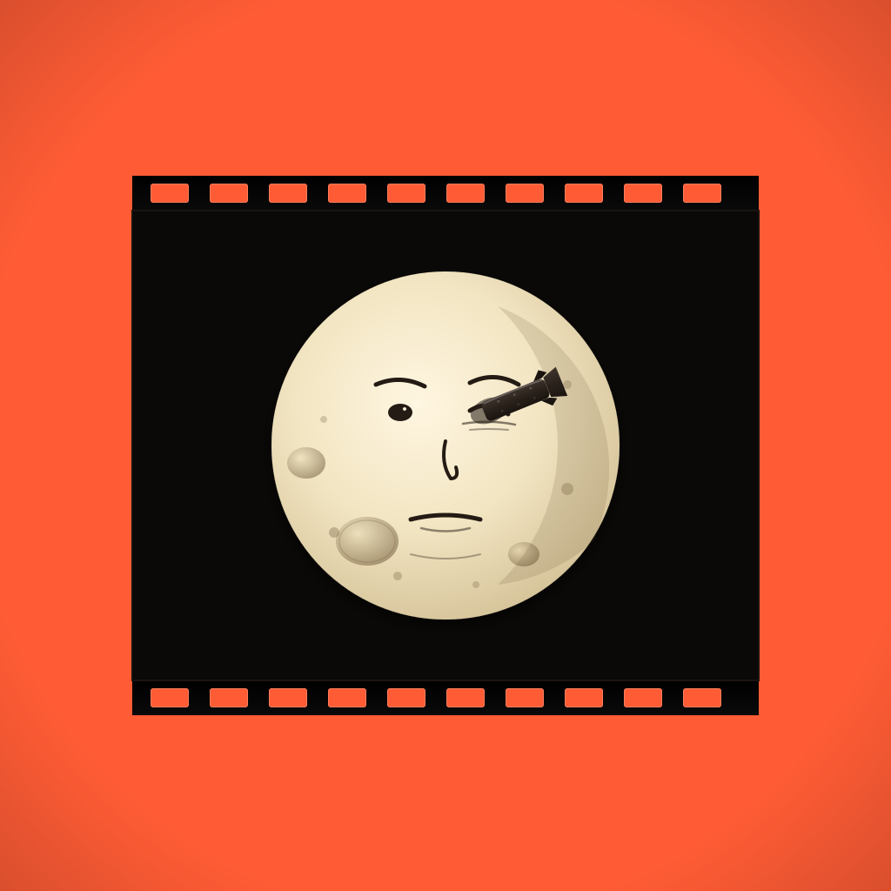
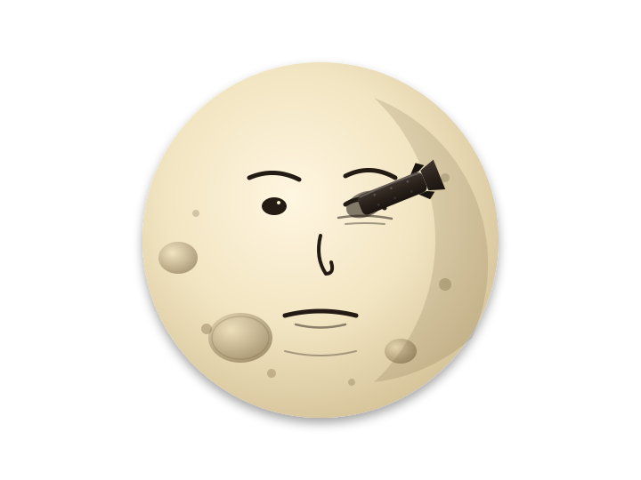

Vector master at assets/app-icon/icon-1024.svg. Below
is the same SVG rendered at the tvOS-relevant sizes, plus a Home
Screen mock showing it next to peer apps to gauge brand signal.

The same master rendered at decreasing sizes. The Méliès moon should remain recognisable — and the rocket silhouette should survive — all the way down to 64px (the smallest tvOS Top Shelf thumbnail).
Archive Watch among streaming peers. The bold orange should separate cleanly from Apple TV (black), Netflix (red), Disney+ (blue), and Plex (yellow).
For verifying anatomy. This is what gets composited inside the
film frame. Source: assets/app-icon/melies-moon.svg.

Production: this vector serves as the placeholder
icon. The shipping App Store icon may swap the illustration for a
high-resolution photographic still from the original 1902 film
(public domain, available via the Library of Congress National
Film Registry and Wikimedia Commons). The frame, sprockets, and
bold-color background remain unchanged. See
docs/design/app-icon.md for the full spec and tvOS
layered-icon variants.